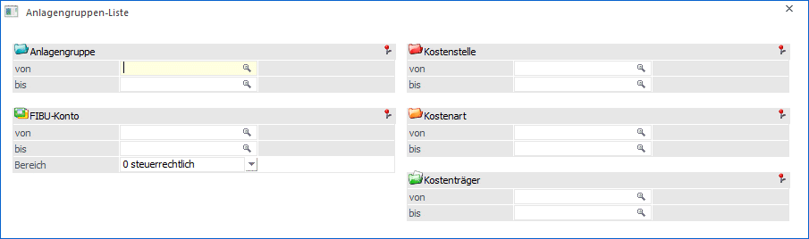
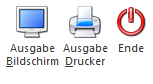
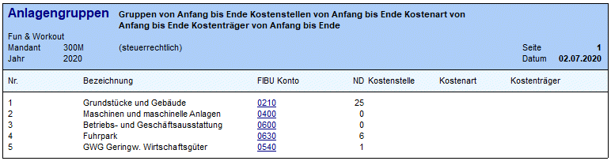

Darunter versteht man die Auswertung der Anlagengruppen. Diese Einstellung finden Sie im Menüpunkt:
1 Auswertungen
1 Anlagengruppen-Liste

Ø
Anlagengruppe
von - bis
Die Ausgabe kann auf bestimmte Anlagengruppen, der das Inventargut im Anlagenstamm zugeordnet wurde, eingeschränkt werden.
Ø
FIBU-Konto
von - bis
Die Ausgabe kann auf bestimme FIBU-Konten eingeschränkt werden.
Ø Bereich
Hier wird ausgewählt, ob das steuerrechtliche oder handelsrechtliche FIBU-Konto aus dem Anlagenstamm für die Ausgabe herangezogen werden soll.
Ø
Kostenstelle
von - bis
Die Ausgabe kann auf bestimmte Kostenstellen eingeschränkt werden.
Ø
Kostenart
von - bis
Die Ausgabe kann auf bestimme Kostenarten eingeschränkt werden.
Ø
Kostenträger
von – bis
Die Ausgabe kann auf bestimmte Kostenträger eingeschränkt werden.
Buttons

Ø Ausgabe Bildschirm
Standardmäßig wird die Ausgabe auf dem Bildschirm vorgeschlagen, die auch durch Drücken der F5-Taste gestartet werden kann.
Ø Ausgabe Drucker
Die Ausgabe wird am Drucker ausgegeben.
Ø Ende
Das Fenster wird geschlossen, ohne dass eine Auswertung angezeigt wird.
